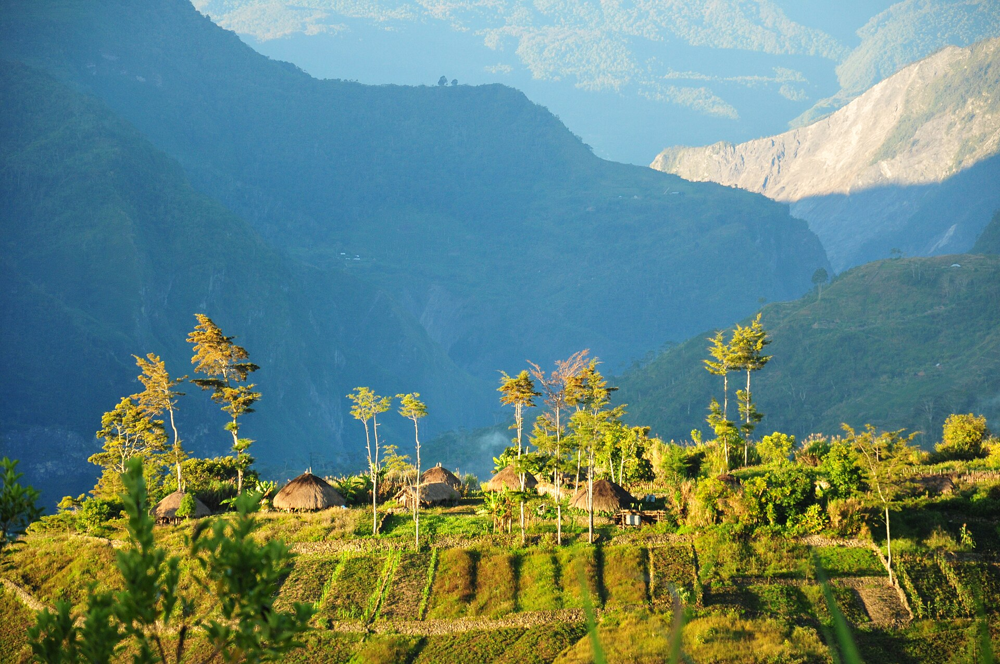
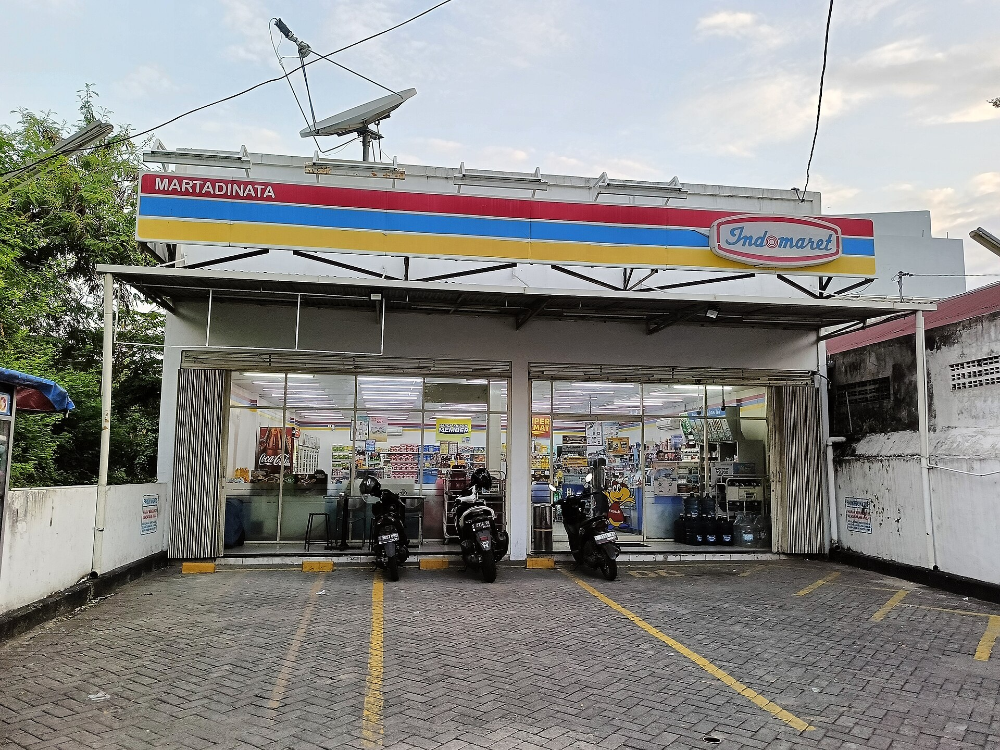

“Terpencil”
Jangkauan terhadap populasi penduduk cukup baik: 95% penduduk dalam ±1,4 km. Tetapi kasus pencilannya nyata: 146 koperasi tanpa penduduk dalam 5 km, semuanya bisa diperiksa satu per satu.
Baca bab Akses →Sebuah investigasi data · 2026
Program Koperasi Desa Merah Putih menempatkan koperasi di hampir setiap desa di Indonesia, lebih dari 83 ribu titik, dari Aceh sampai Papua melalui Instruksi Presiden No. 9 Tahun 2025. Di balik angka itu beredar tiga tuduhan: sejumlah koperasi dibangun di lokasi yang tak lazim, sebagian di pelosok yang nyaris tak tersentuh orang, sebagian lagi di atas tanah yang bukan tempatnya, seperti tengah sawah atau tepi hutan; banyak yang didirikan tepat di depan minimarket yang sudah ramai; dan anggaran digelontorkan besar-besaran sementara hasilnya senyap. Kami memeriksa ketiganya satu per satu dengan data yang bisa diunduh siapa saja, dan dengan kejujuran untuk menyebut klaim apa adanya sesuai hasil analisis.
Catatan data
Seluruh titik pada peta laporan ini memakai koordinat resmi dari SIMKOPDES. Platform itu sendiri menyatakan bahwa angka yang ditampilkan adalah jumlah koperasi yang telah terbentuk secara kelembagaan, bukan jumlah gedung atau gerai yang telah dibangun, dan bahwa posisi pada peta resminya adalah visualisasi representatif per wilayah, bukan koordinat geografis presisi setiap koperasi. Dengan kata lain, koordinat yang kami pakai adalah perkiraan lokasi, bukan titik gedung yang pasti, dan seluruh analisis kedekatan di laporan ini, misalnya jarak ke penduduk, jalan, atau minimarket, ikut mewarisi ketidakpastian itu.
Faktanya, sebagian besar titik bahkan belum tentu memiliki bangunan. Dari 83.379 koperasi yang terdaftar per 13 Agustus 2026, baru 20.221 (24,3%) yang mencatat pembangunan fisik selesai 100%, sementara lebih dari separuh koperasi (54,4%) tidak memiliki catatan tahap pembangunan sama sekali. Sebuah titik pada peta bisa jadi koperasi yang masih berupa rencana, bukan gedung yang sudah berdiri.
Karena itulah lokasi sebenarnya tiap koperasi masih menjadi pertanyaan terbuka. Ke depan kami berencana memperbaiki fitur verifikasi gotong royong agar publik dapat ikut memastikan lokasi nyata tiap koperasi, dan situs ini kemudian dapat memakai hasil verifikasi itu sebagai sumber utama analisis.
Bab 1 · Akses
Kami mulai dari jangkauan. Dengan peta kepadatan penduduk berpetak 400 meter, kami menghitung berapa banyak orang Indonesia yang rumahnya dekat dengan sebuah koperasi. Hasil analisis menunjukkan bahwa Kopdes dibangun di hampir tiap desa, dan sebagian besar di antaranya berada dekat dengan populasi penduduk.
Bab 1 · Akses
95% penduduk Indonesia tinggal tak lebih dari 1,4 km dari sebuah kopdes. Jangkauan ini bukan kebetulan: program ini memang menempatkan satu koperasi di hampir setiap desa, sehingga jarak ke koperasi terdekat cukup pendek hampir di setiap tempat (dengan asumsi koordinat yang dilaporkan SIMKOPDES sesuai). Perlu dicatat, kami mengukur dengan sel heksagonal 400 meter. Di desa kecil yang berbukit, atau di luar pusat pemukiman, koperasi yang “hanya” 400 meter saja sudah bisa terasa jauh. Maka kami tidak berhenti pada angka rata-rata: kami juga mencari koperasi yang benar-benar di luar jangkauan.
Grafik di samping: pangsa penduduk terhadap jarak ke koperasi terdekat.
Bab 1 · Akses
Tidak terbukti massal bukan berarti tidak ada masalah. Secara keseluruhan, 17.774 koperasi berada di petak 400 meter tanpa penduduk tercatat; di antaranya, 146 koperasi bahkan tanpa satu pun penduduk dalam radius 5 kilometer.
146 dari 83.379 hanyalah 0,2% dari program, tetapi itu 146 kasus nyata, dengan nama dan titik koordinat, yang bisa diperiksa satu per satu.
Kasus-kasus pencilan →Bab 1 · Akses
5.106 koperasi tidak punya jalan beraspal dalam radius 5 km. Saat diukur ulang dengan teliti, separuhnya berjarak lebih dari 9,7 km dari jalan terdekat; 7 di antaranya lebih dari 100 km dari jalan terdekat mana pun.
Semula 19 koordinat koperasi bahkan berada di luar Indonesia, dengan koordinat yang mustahil; data ini telah dikoreksi pada website Simkopdes antara 10 dan 13 Agustus 2026.

Bab 2 · Kompetisi
Kami menguji dua lapis “tumpang tindih”: sesama kopdes, lalu dengan ritel modern yang sudah ada. Keduanya ternyata bukan cerita yang sama.
Bab 2 · Kompetisi
Sebelum menengok minimarket, kita lihat dulu lokasi kopdes terhadap sesama kopdes lainnya. Program ini menempatkan satu kopdes per desa, dan desa-desa di wilayah padat Indonesia memang saling berdekatan. Hasilnya wajar: 91% kopdes punya kopdes lain dalam 5 km, dan satu dari lima hanya berjarak 1 km.
Bab 2 · Kompetisi
Hanya 6,8% kopdes benar-benar berbagi petak 1 km dengan kopdes lain. Sebagian besar “tumpang tindih” yang tampak pada peta ternyata hanya jejak data: koordinat ganda, bukan bangunan bersebelahan.
Yang lebih penting, kopdes yang berdekatan melaporkan transaksi sama seringnya dengan yang sendirian. Tidak ada penalti yang terukur.
Soal kanibalisasi, selengkapnya →
Bab 3 · Anggaran & output
Inilah tuduhan yang paling kuat di antara semuanya
Bab 3 · Anggaran & output
Program ini mencatat Rp 202,6 miliar nilai transaksi per 13 Agustus 2026, naik dari Rp 179,5 miliar pada 5 Agustus. Rata-rata, setiap koperasi baru “menghasilkan” sekitar Rp 2,43 juta seumur hidupnya, tak lebih dari sebulan belanja dapur.
Lihat grafik di samping: sistem mencatat 96% desa punya rekening dan 97% punya NPWP, tetapi hanya 3,3% yang melaporkan transaksi. Mesin pendaftaran bekerja; mesin operasinya senyap.
Soal anggaran, selengkapnya →Bab 3 · Anggaran & output
Tujuh dari sepuluh koperasi mengantongi NIB, izin resmi berusaha. Hanya 23 desa yang melaporkan transaksi tanpa izin. Tetapi 70% desa memegang izin dan tidak melaporkan transaksi apa pun: izinnya ada, dagangnya tidak.
Simpanan bercerita serupa: 87,5% desa tidak mencatat simpanan sama sekali, dan di yang ada, uangnya adalah modal awal, bukan tabungan yang berjalan.
Bab 3 · Anggaran & output
100 desa menyumbang 34,8% dari seluruh nilai transaksi nasional; 1.000 desa menyumbang 90,6%. Antara 5 dan 9 Agustus nilainya naik di dalam kumpulan desa pelapor yang hampir tidak berubah, tetapi sejak 13 Agustus jumlah desa pelapor ikut naik (+209 desa). Pertanyaannya bukan lagi “apakah ada yang melaporkan”, melainkan apakah tunggakan mulai terbayar.
Konstruksinya baru seperempat yang selesai. Rapat anggota tahunan (RAT): tercatat untuk 60% koperasi, tetapi hanya 6% di Papua Pegunungan.
Momen peta
Setiap titik adalah satu koperasi terdaftar. Geser dan perbesar untuk melihat bagaimana program ini ditebar, lalu gunakan filter untuk melihat pencilan yang nyata: koperasi yang tak tersentuh penduduk, yang jauh dari jalan, dan yang koordinatnya mustahil.
Vonis
Tiga tuduhan dan serangkaian temuan.
Jangkauan terhadap populasi penduduk cukup baik: 95% penduduk dalam ±1,4 km. Tetapi kasus pencilannya nyata: 146 koperasi tanpa penduduk dalam 5 km, semuanya bisa diperiksa satu per satu.
Baca bab Akses →Kedekatan lokasi dengan minimarket eksisting memang ada, begitu juga kedekatan sesama kopdes.
Baca bab Kompetisi →Rp 202,6 miliar, tetapi mesin operasi nyaris senyap: hanya 3,3% desa melaporkan transaksi. Ini catatan resmi di website SIMKOPDES, setelah program berjalan lebih dari satu tahun sejak Instruksi Presiden No. 9 Tahun 2025.
Baca bab Anggaran →Metodologi lengkap di Lampiran metode · data yang bisa diunduh di Data & sumber · Tentang & kebijakan koreksi